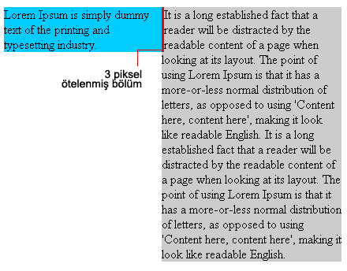
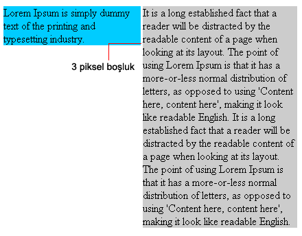

Bu hata IE5-6/Win versiyonlarında görünür. Float uygulanmış elementlere komşu metinlerin maruz kaldığı bir hatadır. Örneği bir elementinize float:left tanımı yaptınız ve yanına bir paraf yazı eklemek istediğinizde, ie5-6 versiyonlarında soldaki float uygulanmış element içeriği boyunda sağdaki metin soldan 3 piksel kadar içeriğini öteleyecektir.
.solKolon { float: left; width: 200px; background-color:#00CCFF; } p { margin-left: 200px; background-color:#CCCCCC; }

Başlangıç olarak değişen içeriğine göre yükselik alan metin alanına(sağdaki metin) müdahale edeceğiz. Görünüm olarak 3 piksellik boşluğu kaldırabiliriz. IE5-6 yükseklik tanımını min-height gibi yorumlar, elementin yüksekliğine küçük bir değer(height:1%) atadığımızda bu elementin boyutunu değiştirmeyecektir. Bu atama diğer web tarayıcılarını etkileyecektir bu nedenle diğer web tarayıcılarından bu kodu gizlemeliyiz.
/* E5-Mac gizleyelim. sadece IE-Win görsün bu kodu. */ * html p { height: 1%; } /* IE5/Mac den gizlemeye son*/

Ancak şöyle bir sorunumuz daha var ki önceki konulardan bildiğimiz gibi bu alana float uygulandığında margin-left:200px tanımını IE iki kat görecektir bunu engellemek için margin-left değerini sıfırlamalıyız.
/* E5-Mac gizleyelim. sadece IE-Win görsün bu kodu. */ * html p { height: 1%; margin-left: 0; } /* IE5/Mac den gizlemeye son */
İçerideki boşluğu aldık ancak elementler arasında boşluk kaldı bunu kaldırmak için sağ margin değerine -3 piksel atama yapmalıyız.
/* E5-Mac gizleyelim. sadece IE-Win görsün bu kodu. */
* html p { height: 1%; margin-left: 0; }
* html .solKolon { margin-right: -3px; }
/* IE5/Mac den gizlemeye son */
Bu tüm sorunlarımız çözecektir. Tabi float uygulanan elementin içinde resim yoksa. Resmin olduğu durumlarda sorun olacaktır. Bu sorunu çözmek için IE5/Win için resmin sağına ve soluna -3 piksel margin ataması yapmalıyız. IE6 bu margin'leri görmemelidir. Bunun için kodumuz şöyle olacaktır:
/* E5-Mac gizleyelim. sadece IE-Win görsün bu kodu. */
* html p { height: 1%; margin-left: 0; }
* html img.solKolon { margin: 0 -3px; margin: 0; }
/* IE5/Mac den gizlemeye son */
Biliyorum bu kod bizim sade ve temiz kod mantığımıza çok ters ama yapılabilecek pek bir şey de yok. Bu CSS'in sorunu değil tamamen IE'nin sorunundan kaynaklanıyor.
Microsoft bu hatasını sonunda anladı ve yeni versiyonu IE7'de bu sorunu giderdi. Ama bu bizim hatayı ayıklamamız anlamına gelmiyor. En azında IE7 kullananlar çoğalana kadar. Hala 1999'da çıkan IE5 için kod yazdığımızı düşünürsek bayağı bir zaman daha bu kodları yazmamız gerekiyor:/
Yorumlar !